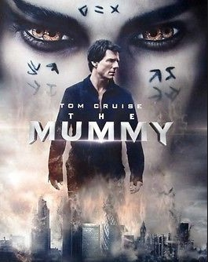
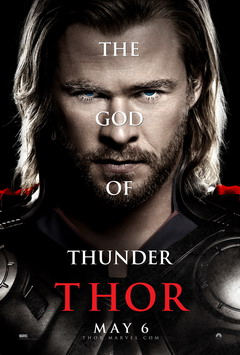
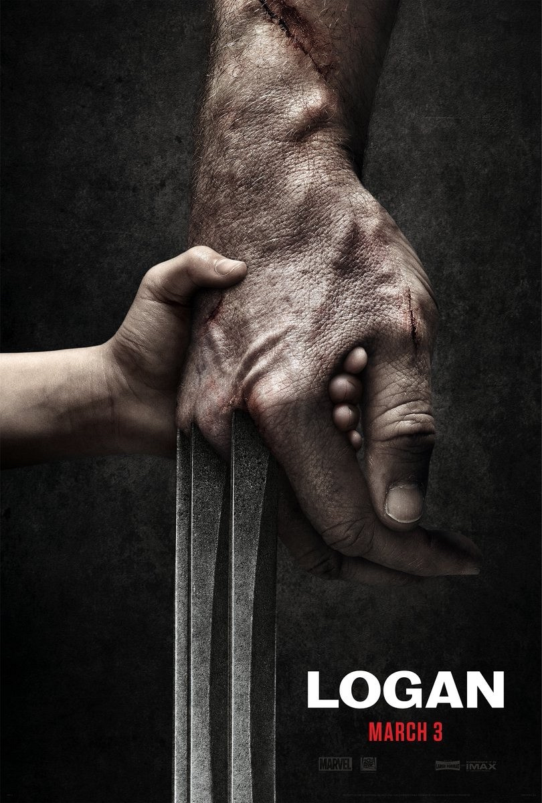
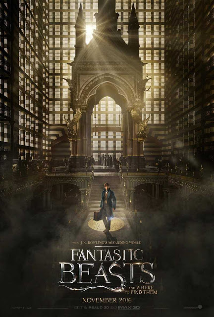
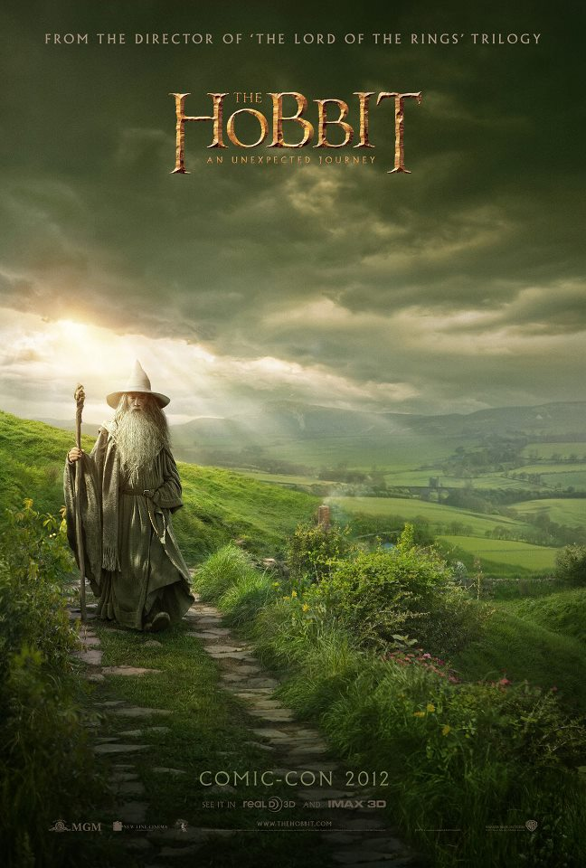

5.1: The Chronicles of Narnia: The Lion, the Witch and the Wardrobe

Ratings : 🌟 6.9
Genre :AdventureFantasy
Release Date : 9 December 2005
Watch-Time : 2h 23min.
Director : Andrew Adamsons
Starring : William Moseley, Anna Popplewell, Skandar Keynes, Georgie Henley, Tilda Swinton, James McAvoy, Jim Broadben, Liam Neeson
Box-Office : $745 million
Storyline:
Four children from the same family have to leave their town because of the bombings of WWII. A woman and a professor take the children to their house. While playing a game of hide-and-seek, the youngest member of the family, Lucy, finds a wardrobe to hide in. She travels back and back into the wardrobe and finds a place named Narnia. After going in twice, the four children go in together for the last time. They battle wolves, meet talking animals, encounter an evil white witch and meet a magnificent lion named Aslan. Will this be the end of their journey to Narnia or will they stay?
5.2: The Mummy
Ratings : 🌟 5.4
Genre : ActionAdventureFantasy
Release Date : 9 June 2017
Watch-Time : 1h 50min.
Director : Alex Kurtzman
Starring : Tom Cruise, Annabelle Wallis, Sofia Boutella, Jake Johnson, Courtney B. Vance, Russell Crowe
Box-Office : $410 million
Storyline:
Though safely entombed in a crypt deep beneath the unforgiving desert, an ancient princess, whose destiny was unjustly taken from her, is awakened in our current day bringing with her malevolence grown over millennia, and terrors that defy human comprehension.
4.1: Thor
Ratings : 🌟 7.0
Genre : ActionAdventureFantasy
Release Date : 6 May 2011
Watch-Time : 1h 55min.
Director : Kenneth Branagh
Starring : Chris Hemsworth, Natalie Portman, Tom Hiddleston, Stellan Skarsgård, Colm Feore, Ray Stevenson, Idris Elba, Kat Dennings, Rene Russo, Anthony Hopkins
Box-Office : $449.3 million
Storyline:
The warrior Thor (Chris Hemsworth) is cast out of the fantastic realm of Asgard by his father Odin (Sir Anthony Hopkins) for his arrogance and sent to Earth to live amongst humans. Falling in love with scientist Jane Foster (Natalie Portman) teaches Thor much-needed lessons, and his new-found strength comes into play as a villain from his homeland sends dark forces toward Earth.
4.2: X-Men

Ratings : 🌟 7.4
Genre : ActionAdventureFantasy
Release Date : 14 July 2000
Watch-Time : 1h 44min.
Director : Bryan Singer
Starring : Patrick Stewart, Hugh Jackman, Ian McKellen, Halle Berry, Famke Janssen, James Marsden, Bruce Davison, Rebecca Romijn-Stamos, Ray Park, Anna Paquin
Box-Office : $296.3 million
Storyline:
In a world where both Mutants and Humans fear each other, Marie, better known as Rogue, runs away from home and hitches a ride with another mutant, known as Logan, a.k.a. Wolverine. Professor Charles Xavier, who owns a school for young mutants, sends Storm and Cyclops to bring them back before it is too late. Magneto, who believes a war is approaching, has an evil plan in mind, and needs young Rogue to help him.
3.1: Logan
Ratings : 🌟 8.1
Genre : ActionDramaSci-Fi
Release Date : 3 March 2017
Watch-Time : 2h 17min.
Director : James Mangold
Starring : Hugh Jackman, Patrick Stewart, Richard E. Grant, Boyd Holbrook, Stephen Merchant, Dafne Keen
Box-Office : $619 million
Storyline:
In 2029 the mutant population has shrunken significantly due to genetically modified plants designed to reduce mutant powers and the X-Men have disbanded. Logan, whose power to self-heal is dwindling, has surrendered himself to alcohol and now earns a living as a chauffeur. He takes care of the ailing old Professor X whom he keeps hidden away. One day, a female stranger asks Logan to drive a girl named Laura to the Canadian border. At first he refuses, but the Professor has been waiting for a long time for her to appear. Laura possesses an extraordinary fighting prowess and is in many ways like Wolverine. She is pursued by sinister figures working for a powerful corporation; this is because they made her, with Logan's DNA. A decrepit Logan is forced to ask himself if he can or even wants to put his remaining powers to good use. It would appear that in the near-future, the times in which they were able put the world to rights with razor sharp claws and telepathic powers are now over.
3.2: Black Panther

Ratings : 🌟 7.3
Genre : ActionAdventureSci-FiFantasy
Release Date : 16 February 2018
Watch-Time : 2h 14min .
Director : Ryan Coogler
Starring : Chadwick Boseman, Michael B. Jordan, Lupita Nyong'o, Danai Gurira, Martin Freeman, Daniel Kaluuya, Letitia Wright, Winston Duke, Angela Bassett, Forest Whitaker, Andy Serkis
Box-Office : $1.347 billion
Storyline:
After the events of Captain America: Civil War, Prince T'Challa returns home to the reclusive, technologically advanced African nation of Wakanda to serve as his country's new king. However, T'Challa soon finds that he is challenged for the throne from factions within his own country. When two foes conspire to destroy Wakanda, the hero known as Black Panther must team up with C.I.A. agent Everett K. Ross and members of the Dora Milaje, Wakandan special forces, to prevent Wakanda from being dragged into a world war.
2.1: Aquaman

Ratings : 🌟 7.0
Genre : ActionAdventureFantasy
Release Date : 21 December 2018
Watch-Time : 2h 23min.
Director : James Wan
Starring : Jason Momoa, Amber Heard, Willem Dafoe, Patrick Wilson, Dolph Lundgren, Yahya Abdul-Mateen II, Nicole Kidman
Box-Office : $1.148 billion
Storyline:
Born upon the shores of the surface world, Arthur Curry (Jason Momoa) discovers that he is only half human, with the other half of his blood being of Atlanteean descent, thus making him the rightful heir to the throne of the undersea kingdom of Atlantis. However, Arthur learns that Atlantis is being ruled by his malicious half-brother Orm (Patrick Wilson), who seeks to unite the seven underwater kingdoms and wage war upon the surface. With aid from Nuidis Vulko (Willem Dafoe) and the gorgeous Mera (Amber Heard), Arthur must discover the full potential of his true destiny and become Aquaman in order to save Atlantis and the surface from Orm's evil plot.
2.2: Harry Potter and the Sorcerer's Stone

Ratings : 🌟 7.6
Genre : FantasyAdventureFamily
Release Date : 16 November 2001
Watch-Time : 2h 32min.
Director : Chris Columbus
Starring : Daniel Radcliffe, Rupert Grint, Emma Watson, John Cleese, Robbie Coltrane, Warwick Davis, Richard Griffiths, Richard Harris, Ian Hart, John Hurt, Alan Rickman, Fiona Shaw, Maggie Smith, Julie Walters
Box-Office : $1.002 billion
Storyline:
This is the tale of Harry Potter (Daniel Radcliffe), an ordinary eleven-year-old boy serving as a sort of slave for his aunt and uncle who learns that he is actually a wizard and has been invited to attend the Hogwarts School for Witchcraft and Wizardry. Harry is snatched away from his mundane existence by Rubeus Hagrid (Robbie Coltrane), the groundskeeper for Hogwarts, and quickly thrown into a world completely foreign to both him and the viewer. Famous for an incident that happened at his birth, Harry makes friends easily at his new school. He soon finds, however, that the wizarding world is far more dangerous for him than he would have imagined, and he quickly learns that not all wizards are ones to be trusted.
1.1: Fantastic Beasts and Where to Find Them
Ratings : 🌟 7.4
Genre : AdventureFamilyFantasy
Release Date : 18 November 2016
Watch-Time : 2h 12min.
Director : David Yates
Starring : Eddie Redmayne, Katherine Waterston, Dan Fogler, Alison Sudol, Ezra Miller, Samantha Morton, Jon Voight, Carmen Ejogo, Ron Perlman, Colin Farrell
Box-Office : $814 million
Storyline:
In mid-1920s New York, Newt Scamander, a British young activist wizard, arrives in the city, holding a mysterious leather suitcase that shelters diverse and magical creatures that exist among us. Amid an already fragile equilibrium of secrecy, and the increasing disasters ascribed to the dark wizard, Gellert Grindelwald, Newt's precious suitcase goes missing, and to make matters worse, several creatures manage to escape. Before long, this unforeseen complication catches Senior Auror Percival Graves' attention who targets Newt, against the backdrop of an invisible, devastating, and utterly unpredictable menace that still wreaks havoc on 5th Avenue. In the end, is there a hidden agenda behind Graves' intentions? Moreover, what will happen to the remaining fantastic beasts that are still on the loose?
1.2: The Hobbit: An Unexpected Journey
Ratings : 🌟 7.8
Genre : AdventureFantasy
Release Date : 14 December 2012
Watch-Time : 2h 49min.
Director : Peter Jackson
Starring : Ian McKellen, Martin Freeman, Richard Armitage, James Nesbitt, Ken Stott, Cate Blanchett, Ian Holm, Christopher Lee, Hugo Weaving, Elijah Wood, Andy Serkis
Box-Office : $1.021 billion
Storyline:
Bilbo Baggins is swept into a quest to reclaim the lost Dwarf Kingdom of Erebor from the fearsome dragon Smaug. Approached out of the blue by the wizard Gandalf the Grey, Bilbo finds himself joining a company of thirteen dwarves led by the legendary warrior, Thorin Oakenshield. Their journey will take them into the Wild; through treacherous lands swarming with Goblins and Orcs, deadly Wargs and Giant Spiders, Shapeshifters and Sorcerers. Although their goal lies to the East and the wastelands of the Lonely Mountain first they must escape the goblin tunnels, where Bilbo meets the creature that will change his life forever ... Gollum. Here, alone with Gollum, on the shores of an underground lake, the unassuming Bilbo Baggins not only discovers depths of guile and courage that surprise even him, he also gains possession of Gollum's "precious" ring that holds unexpected and useful qualities ... A simple, gold ring that is tied to the fate of all Middle-earth in ways Bilbo cannot begin to ...